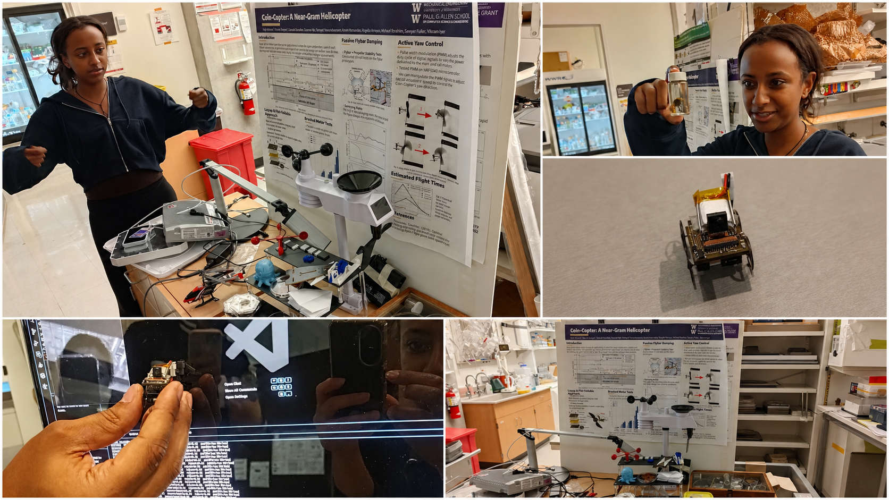

AI Future Lab: Learning Engineering from Nature
A five-day cross-border AI camp co-supervised on site by Pecu Tsai, connecting doctoral instructors, high-school teaching assistants, students from Taiwan and multiple U.S. states, advanced AI study, lab visits, and a capstone showcase.